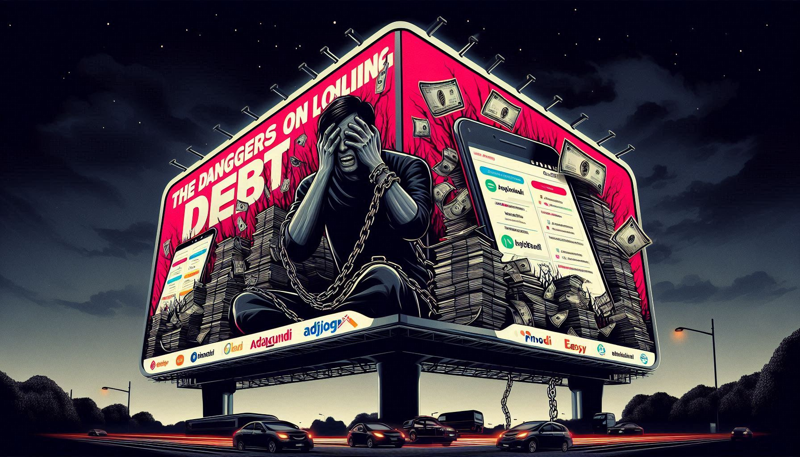

PINJOL?
Sudah tidak heran betapa cepatnya beredar Pinjaman Online (Pinjol) di tengah masyarakat.
hanya bermodalkan smartphone dan akses internet, siapa pun bisa langsung mengajukan pinjaman dalam hitungan menit.
Sayangnya, kemudahan ini sering dimanfaatkan oleh oknum yang tidak bertanggung jawab.
Banyak aplikasi pinjol ilegal yang menjerat korban dengan bunga tinggi, ancaman penagihan kasar, hingga penyalahgunaan data pribadi.
Jangan sampai kita tergoda kemudahan instan dan akhirnya terjerat utang yang merugikan!

BAHAYA PINJOL
Apa saja bahaya Pinjol?
Pinjaman online (pinjol) sering kali terlihat mudah dan cepat, namun di balik kemudahannya, tersembunyi banyak risiko yang bisa berdampak besar bagi kehidupan finansial dan privasi seseorang.
- Hancurnya sebuah keluarga: Banyak sekali kasus percceraian akibat Pinjol khususnya negara Indonesia ini!
- Susah untuk mengajukan pinjaman Bank ketika ingin mengambil kendaraan, rumah, dll: Banyak orang yang tergiur oleh kemudahan pinjaman online, namun akibatnya mereka kesulitan ketika mengajukan pinjaman di bank untuk membeli rumah, kendaraan, atau keperluan besar lainnya. Riwayat pinjaman online yang tidak terkendali bisa merusak kredibilitas finansial dan menurunkan skor kredit.
- Hancurnya Masa Depan Finansial: Terjebak dalam pinjaman online yang tidak terkendali bisa menghancurkan masa depan finansial seseorang. Utang yang terus menumpuk akan menghambat seseorang untuk merencanakan kehidupan ke depan, membeli rumah, membayar pendidikan anak, atau merencanakan pensiun. Semua rencana masa depan bisa hancur hanya karena terlena dengan kemudahan pinjaman instan.
- Stres dan Kesehatan Mental yang Tertekan: Terus-menerus memikirkan utang yang harus dibayar dan ancaman penagihan yang datang bisa menurunkan kualitas hidup. Stres finansial ini sering kali berujung pada masalah kesehatan mental yang serius, seperti kecemasan, depresi, dan bahkan gangguan tidur.
- Terjebak dalam Siklus Utang: Banyak orang yang mencoba membayar utang pinjol dengan mengambil pinjaman baru. Hal ini menciptakan siklus utang yang berulang-ulang, di mana setiap pinjaman baru hanya digunakan untuk menutupi pinjaman lama, tanpa adanya solusi jangka panjang. Tanpa sadar, masa depan finansial menjadi semakin terpuruk.
- Bunga dan Denda Tinggi: Banyak pinjol ilegal mengenakan bunga harian yang sangat tinggi, bahkan melebihi 1% per hari, serta denda keterlambatan yang tidak masuk akal.
- Akses Data Pribadi: Beberapa aplikasi meminta akses ke kontak, galeri, hingga lokasi, yang bisa disalahgunakan untuk mengintimidasi peminjam.
- Teror Penagihan: Penagihan bisa dilakukan secara kasar, mengancam, dan mempermalukan, baik ke peminjam maupun ke orang-orang di kontak mereka.
- Jeratan Utang: Karena kemudahannya, banyak orang terjebak dalam pinjaman berulang (gali lubang tutup lubang) tanpa solusi jangka panjang.
- Identitas Disalahgunakan: Data pribadi bisa dijual atau digunakan untuk membuat pinjaman atas nama tanpa sepengetahuan.
| No | Keterangan | Kadaluarsa |
|---|---|---|
| 1 | ADA PUNDI | 4 Mei 2025 |
| 2 | ADA PUNDI | 3 Juni 2025 |
| 3 | ADA PUNDI | 3 Juli 2025 |
| 4 | ADA PUNDI | 2 Agustus 2025 |
| 5 | ADA PUNDI | 1 September 2025 |
| 6 | ADA PUNDI | 1 Oktober 2025 |
| 7 | ADA PUNDI | 31 Oktober 2025 |
| 8 | ADA PUNDI | 30 November 2025 |
| 9 | ADA PUNDI | 30 Desember 2025 |
| 10 | ADA PUNDI | 29 Januari 2026 |